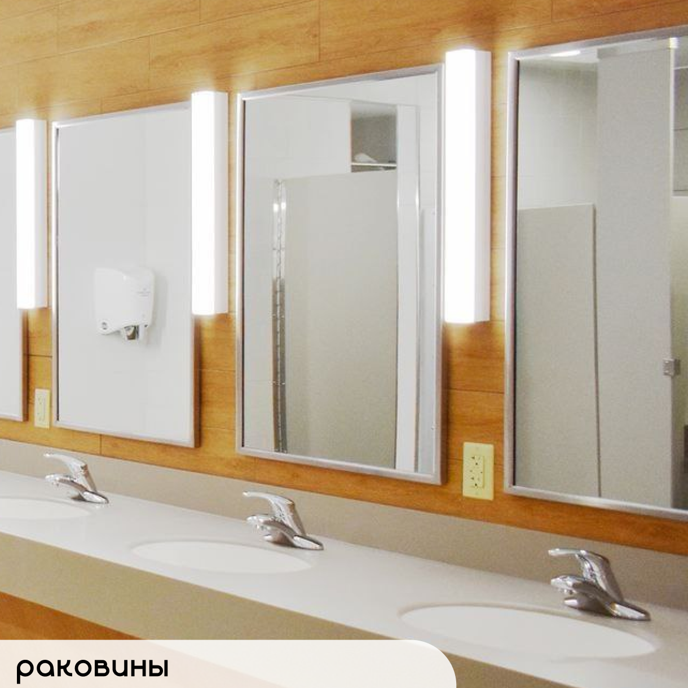
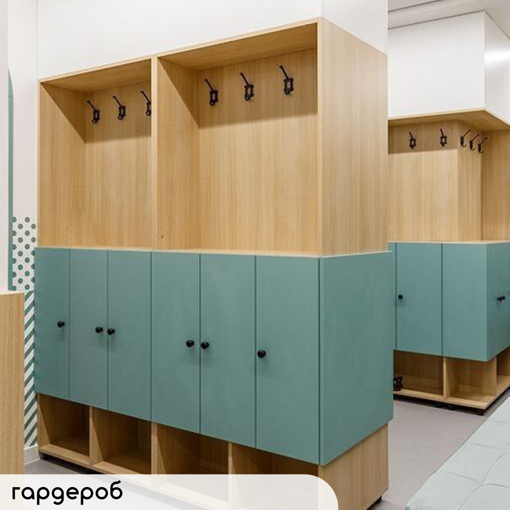
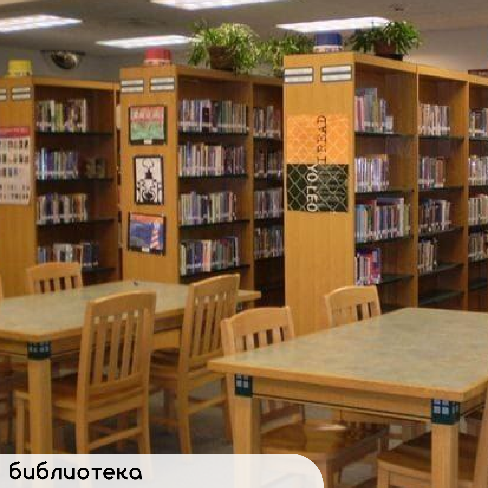
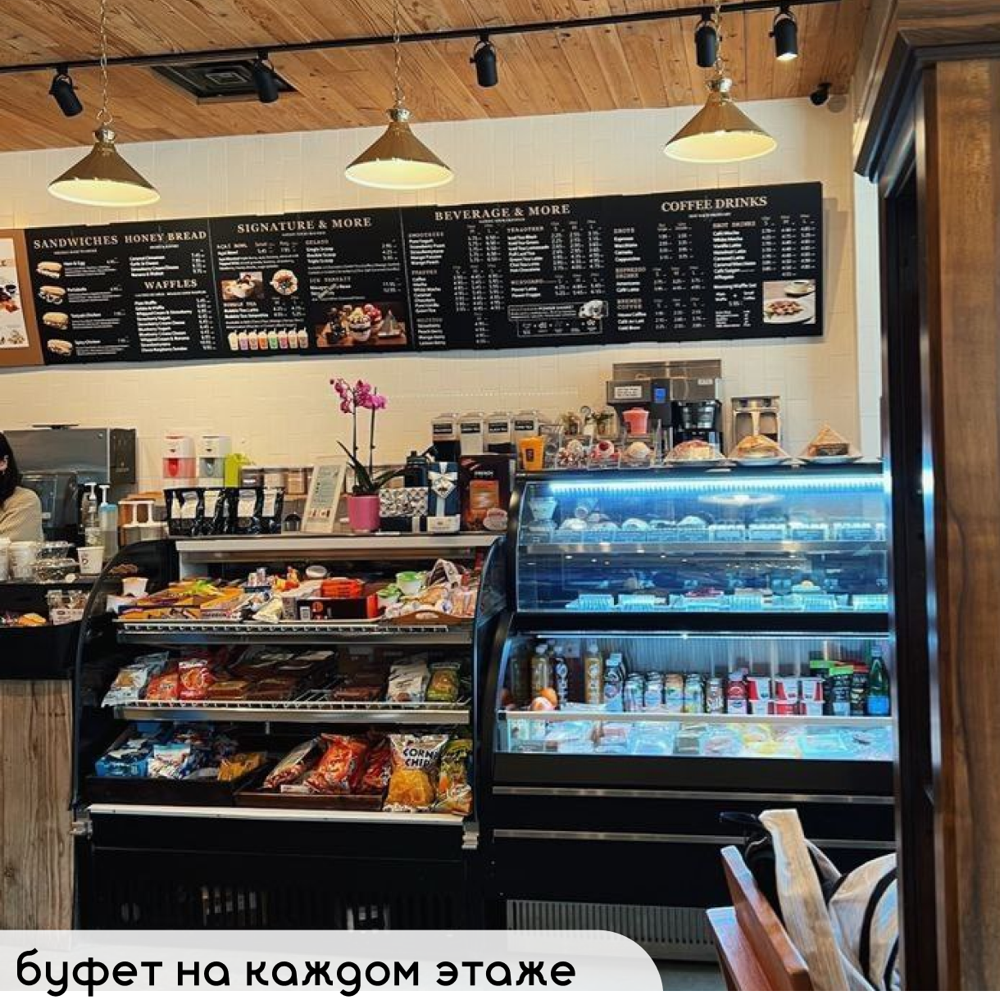
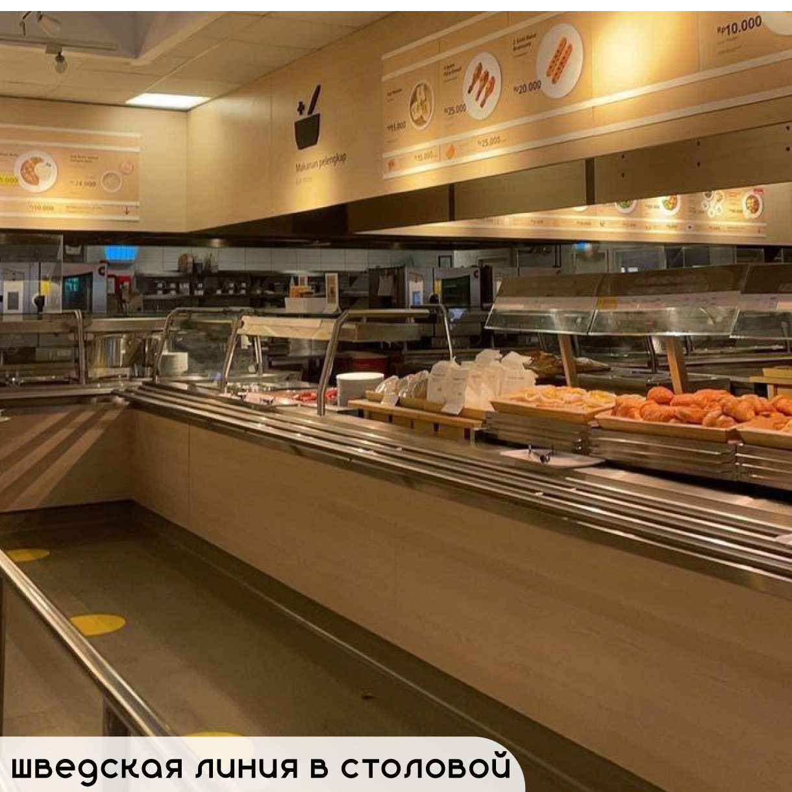
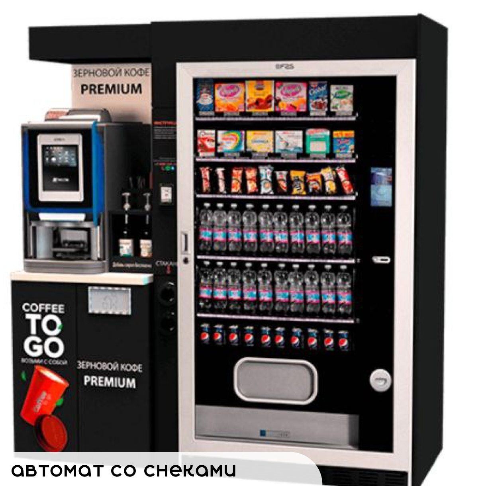
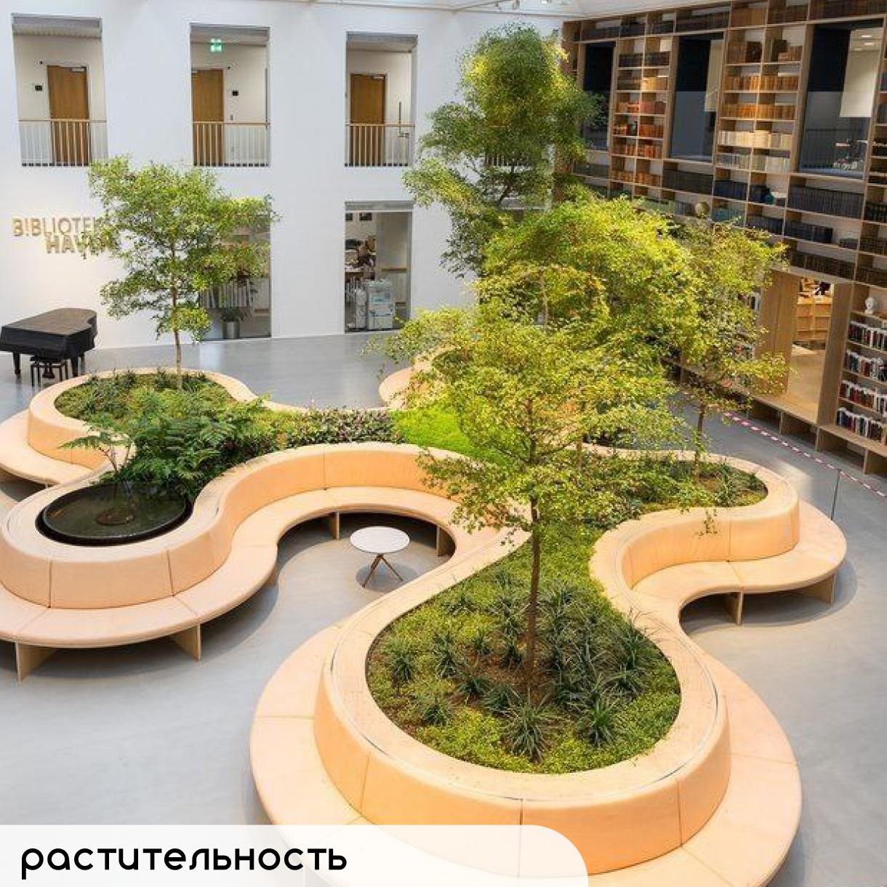
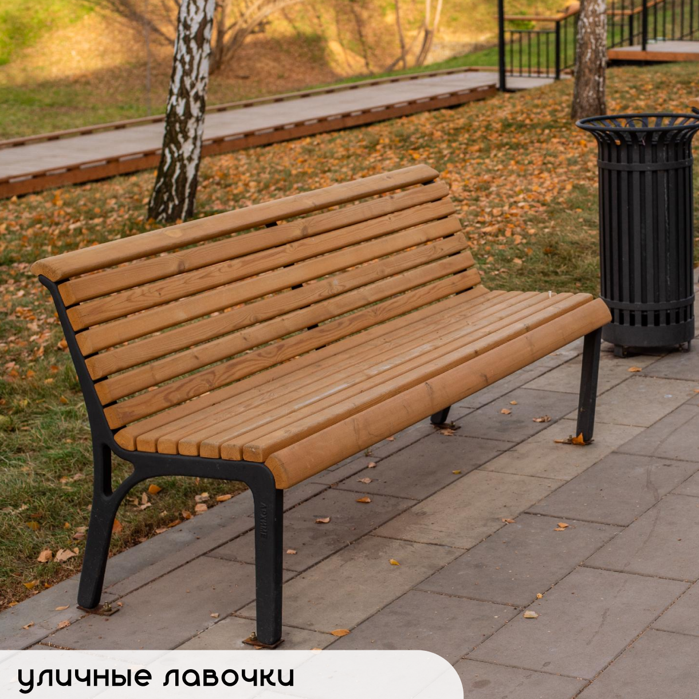
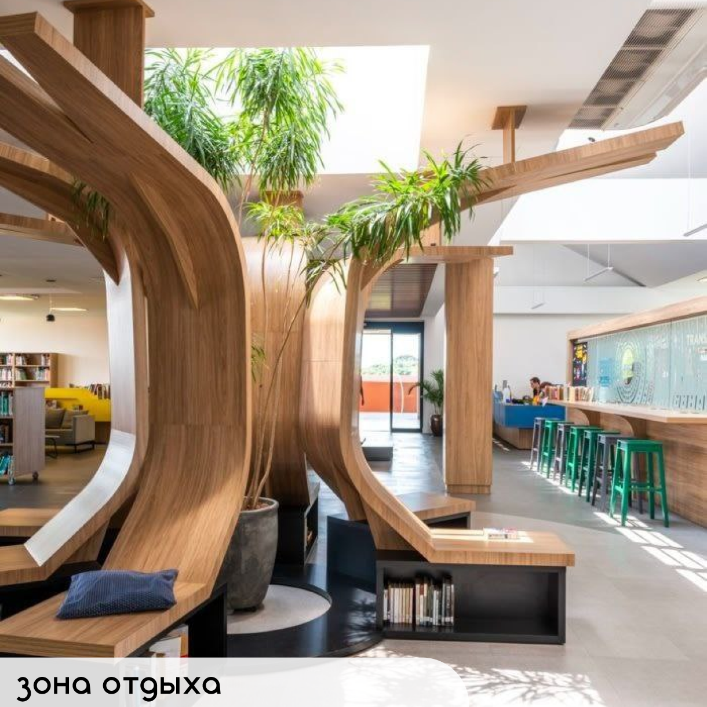

Должное оборудование позволит проводить опыты на уроках химии и физики, благодаря чему ученики будут больше заинтересованны в этих предметах и в учебе в целом.

Отсутствие достаточного количества раковин в нашей школе - большое неудобство для всех.Оснащение школы достаточным количеством раковин как в туалетах, так и у столовой, а так же постоянная проверка количества мыла в дозаторах - это необходимость

Большим неудобством является нехватка мест для хранения. Гардиробные отсутствуют, и каждый ученик оставляет свои вещи в классе, что крайне неудобно. Шкафчики в коридоре для каждого школьника - это целый ряд удобств: у ученика будет свое личное пространство для его вещей, а также ему не придется носить сменку и прочие вещи в школу и обратно, он их не забудет, и все нужное всегда будет в личном шкафчике.
Удобства

Большая библиотека и читательский зал в школе освобождают учеников от необходимости бегать по городу в поисках нужной книги для школьной программы. Благодаря библиотеке каждый сможет найти необходимую книгу и прочитать ее в спокойной обстановке прямо не выходя из школы. У учеников появится мотивация читать, что сократит в разы их экранное время.

Во время учебной деятельности ученикам часто хочется есть. Однако это настоящая проблема: в столовой всегда большие очереди, и иногда дети вынуждены провести всю перемену в ожидании своей очереди, и все равно опаздать на урок. Небольшой буфет на каждом этаже поможет избавиться от этих сложностей, и купить чего-нибудь вкусного будет гораздо легче.

Еще один способ избавить учеников от вечного стояния в очередях - создание шведской линии в столовой. Дети смогут сами выбирать, что они хотят есть, и не придется пробиваться сквозь толпу людей для того, чтобы отдать деньги продавщице.

Автомат со снеками - очень быстрый и простой вариант небольшого перекуса. Если ученик не хочет полноценно покушать, это прекрасный вариант.
Зоны отдыха

Обогащение школы разнообразной растительностью - это не только элемент декора. Наличие живой природы создает уютную обстановку и снимает стресс, успокаивает нервы, направляет мысли в нужное русло.

Для того, чтобы на протяжении дня мышление не рассеивалось и ученики были сфокусированны на учебе, необходимо делать перерывы и расслабляться. Лучший отдых - это отдых на улице. А чтобы каждый смог на перемене выйти на улицу и отдохнуть между уроками, нужно расставить лавочки вокруг школы.

Не всегда получается выйти на улицу, поэтому хоны отдыха должны бать и в школе. Здесь ученики могут повторить задание на дом, поситать книгу из библиотеки или просто расслабиться, и настроиться на следующий урок.